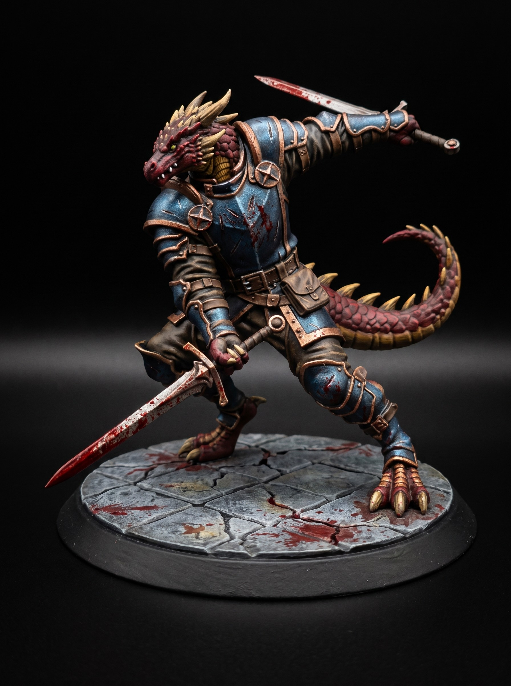

Dread Wraith Lord Grimdark Fantasy STL
August 10, 2026

Green fire spills across the cracked stone. The smoke curls into a towering silhouette. Ribs of pale bone snap together inside the mist. A Wraith Lord steps out from the dead flame.
Tattered cloth drapes over floating iron plate. A spiked crown sits above a face of absolute darkness. Rune-carved chains bind its glowing ribcage. Its gauntleted right hand grips a three-pronged bone scythe.
The executioner lowers its greatsword. The wraith does not bow. It raises its weapon. Every dead rune in the vault begins to hum.
Varek grips his last dagger. The wraith turns toward the shadow behind the altar. Something far worse answers the call.
Get free miniatures:
- Fantasy: https://cults3d.com/@BattleFoundry
- Scifi: https://cults3d.com/@BATTLEFOUNDRYSCIFI
- Grimdark: https://cults3d.com/@DREADWORKS
- Resin Statue: https://cults3d.com/@BlacksiteSyndicate